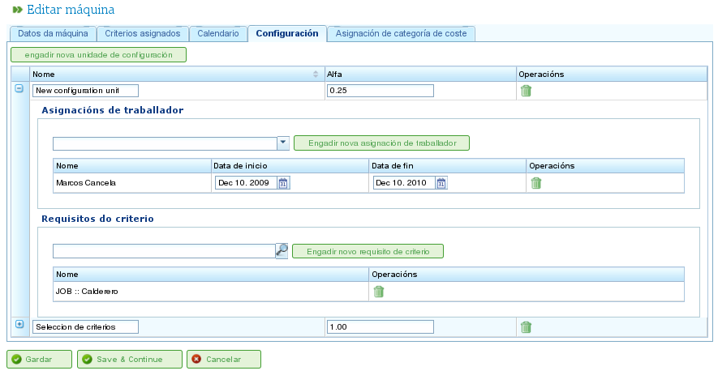

Resource Management
Contents
The program manages two distinct types of resources: staff and machines.
Staff Resources
Staff resources represent the company's workers. Their key characteristics are:
- They fulfill one or more generic or worker-specific criteria.
- They can be specifically assigned to a task.
- They can be assigned generically to a task that requires a resource criterion.
- They can have a default or a specific calendar, as needed.
Machine Resources
Machine resources represent the company's machinery. Their key characteristics are:
- They fulfill one or more generic or machine-specific criteria.
- They can be specifically assigned to a task.
- They can be assigned generically to a task that requires a machine criterion.
- They can have a default or a specific calendar, as needed.
- The program includes a configuration screen where an alpha value can be defined to represent the machine/worker ratio.
- The alpha value indicates the amount of worker time required to operate the machine. For example, an alpha value of 0.5 means that every 8 hours of machine operation requires 4 hours of a worker's time.
- Users can assign an alpha value specifically to a worker, designating that worker to operate the machine for that percentage of time.
- Users can also make a generic assignment based on a criterion, so that a percentage of use is assigned to all resources that meet that criterion and have available time. Generic assignment works similarly to generic assignment for tasks, as described previously.
Managing Resources
Users can create, edit, and deactivate (but not permanently delete) workers and machines within the company by navigating to the "Resources" section. This section provides the following features:
- List of Workers: Displays a numbered list of workers, allowing users to manage their details.
- List of Machines: Displays a numbered list of machines, allowing users to manage their details.
Managing Workers
Worker management is accessed by going to the "Resources" section and then selecting "List of workers." Users can edit any worker in the list by clicking the standard edit icon.
When editing a worker, users can access the following tabs:
Worker Details: This tab allows users to edit the worker's basic identification details:
- Name
- Surname(s)
- National ID document (DNI)
- Queue-based resource (see section on Queue-based Resources)

Editing Workers' Personal Details
Criteria: This tab is used to configure the criteria that a worker fulfills. Users can assign any worker or generic criteria they deem appropriate. It's crucial for workers to fulfill criteria to maximize the program's functionality. To assign criteria:
- Click the "Add criteria" button.
- Search for the criterion to be added and select the most appropriate one.
- Click the "Add" button.
- Select the start date when the criterion becomes applicable.
- Select the end date for applying the criterion to the resource. This date is optional if the criterion is considered indefinite.

Associating Criteria with Workers
Calendar: This tab allows users to configure a specific calendar for the worker. All workers have a default calendar assigned; however, it's possible to assign a specific calendar to each worker based on an existing calendar.

Calendar Tab for a Resource
Cost Category: This tab allows users to configure the cost category that a worker fulfills during a given period. This information is used to calculate the costs associated with a worker on a project.

Cost Category Tab for a Resource
Resource assignment is explained in the "Resource Assignment" section.
Managing Machines
Machines are treated as resources for all purposes. Therefore, similar to workers, machines can be managed and assigned to tasks. Resource assignment is covered in the "Resource Assignment" section, which will explain the specific features of machines.
Machines are managed from the "Resources" menu entry. This section has an operation called "Machine list," which displays the company's machines. Users can edit or delete a machine from this list.
When editing machines, the system displays a series of tabs for managing different details:
Machine Details: This tab allows users to edit the machine's identification details:
- Name
- Machine code
- Description of the machine

Editing Machine Details
Criteria: As with worker resources, this tab is used to add criteria that the machine fulfills. Two types of criteria can be assigned to machines: machine-specific or generic. Worker criteria cannot be assigned to machines. To assign criteria:
- Click the "Add criteria" button.
- Search for the criterion to be added and select the most appropriate one.
- Select the start date when the criterion becomes applicable.
- Select the end date for applying the criterion to the resource. This date is optional if the criterion is considered indefinite.
- Click the "Save and continue" button.

Assigning Criteria to Machines
Calendar: This tab allows users to configure a specific calendar for the machine. All machines have a default calendar assigned; however, it's possible to assign a specific calendar to each machine based on an existing calendar.

Assigning Calendars to Machines
Machine Configuration: This tab allows users to configure the ratio of machines to worker resources. A machine has an alpha value that indicates the machine/worker ratio. As mentioned previously, an alpha value of 0.5 indicates that 0.5 people are required for each full day of machine operation. Based on the alpha value, the system automatically assigns workers who are associated with the machine once the machine is assigned to a task. Associating a worker with a machine can be done in two ways:
- Specific Assignment: Assign a range of dates during which the worker is assigned to the machine. This is a specific assignment, as the system automatically assigns hours to the worker when the machine is scheduled.
- Generic Assignment: Assign criteria that must be fulfilled by workers assigned to the machine. This creates a generic assignment of workers who meet the criteria.
Configuration of Machines
Cost Category: This tab allows users to configure the cost category that a machine fulfills during a given period. This information is used to calculate the costs associated with a machine on a project.

Assigning Cost Categories to Machines
Virtual Worker Groups
The program allows users to create virtual worker groups, which are not real workers but simulated staff. These groups enable users to model increased production capacity at specific times, based on the calendar settings.
Virtual worker groups allow users to assess how project planning would be affected by hiring and assigning staff who meet specific criteria, thus aiding in the decision-making process.
The tabs for creating virtual worker groups are the same as those for configuring workers:
- General Details
- Assigned Criteria
- Calendars
- Associated Hours
The difference between virtual worker groups and actual workers is that virtual worker groups have a name for the group and a quantity, which represents the number of real people in the group. There is also a field for comments, where additional information can be provided, such as which project would require hiring equivalent to the virtual worker group.

Virtual Resources
Queue-based Resources
Queue-based resources are a specific type of productive element that can either be unassigned or have 100% dedication. In other words, they cannot have more than one task scheduled at the same time, nor can they be over-allocated.
For each queue-based resource, a queue is automatically created. The tasks scheduled for these resources can be managed specifically using the provided assignment methods, creating automatic assignments between tasks and queues that match the required criteria, or by moving tasks between queues.